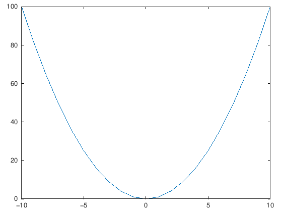
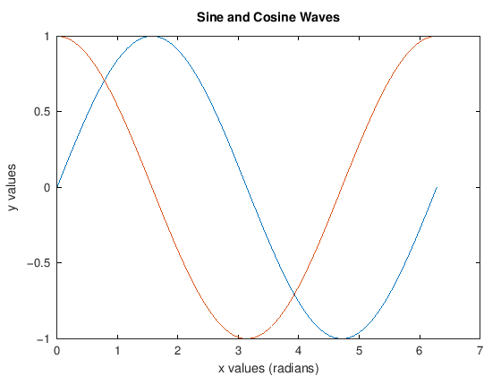
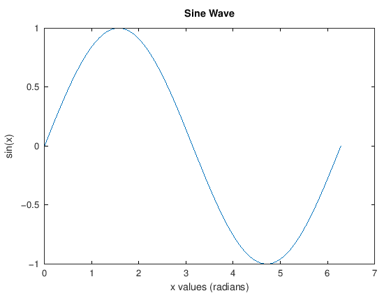

Plotting in MATLAB/Octave#
Making plots in MATLAB is where it really shines. There is a level of simplicity with the plots that is nice, and doesn’t over complicate things.
NOTE: All of the MATLAB interactive pages are going to look a little weird, I have no idea why. There is a bunch of junk whitespace that keeps getting made when it compiled for the website, and I have no idea where it is coming from. Just press the rocket, and then run the code a couple of times, and it will clear up.
n = 10;
x = [-10:10];
y = x.^2;
plot(x,y)

Adding titles, axis labels, and everything else is nice and smooth.
You can make new figures by simply interjecting the figure command.
In order to add multple plots, you can either add more than one plot pair (x and y arrays) in a single plot, or you can use the hold function to keep the figure open and add more plots to it.
Adding subplots is a very similar process as Python. Make sure you get your grid down!
%% Define some data
x = 0:pi/100:2*pi;
y = sin(x);
%% Plot a sine wave
figure
plot(x,y)
%add some labels
xlabel('x values (radians)');
ylabel('sin(x)');
title('Sine Wave');
% %% Two plots
x = 0:pi/100:2*pi;
y1 = sin(x);
y2 = cos(x);
figure
plot(x,y1,x,y2)
xlabel('x values (radians)');
ylabel('y values');
title('Sine and Cosine Waves');
%
% figure
% plot(x,y1)
% % hold on
% plot(x,y2)
% % hold off
% xlabel('x values (radians)');
% ylabel('y values');
% title('Sine and Cosine Waves');
%
%
% %% Three plots and a legend
% x = 0:pi/10:2*pi;
% y1 = sin(x);
% y2 = sin(x-0.25);
% y3 = sin(x-0.5);
% figure
% plot(x,y1,'g',x,y2,'b--o',x,y3,'c*')
% title('2-D Line Plots')
% xlabel('x values')
% ylabel('y values')
% legend('sin(x)', 'sin(x-0.25)', ' sin(x-0.5)')
% %% Subplots
% x = 0:pi/10:2*pi;
% y1 = sin(x);
% y2 = sin(x-0.25);
% y3 = sin(x-0.5);
% figure
% subplot(3,1,1)
% plot(x,y1,'g')
% title('sin(x)')
% subplot(3,1,2)
% plot(x,y2,'b--o')
% title('sin(x-0.25)')
% subplot(3,1,3)
% plot(x,y3,'c*')
% title('sin(x-0.5)')
% %% Lots of subplots
% x = 0:pi/10:2*pi;
% y1 = sin(x);
% y2 = sin(x-0.25);
% y3 = sin(x-0.5);
% y4 = cos(x);
% y5 = cos(x-0.25);
% y6 = cos(x-0.5);
% figure
% subplot(2,3,1)
% plot(x,y1,'g')
% title('sin(x)')
% subplot(2,3,2)
% plot(x,y2,'b--o')
% title('sin(x-0.25)')
% subplot(2,3,3)
% plot(x,y3,'c*')
% title('sin(x-0.5)')
% subplot(2,3,4)
% plot(x,y4,'r')
% title('cos(x)')
% subplot(2,3,5)
% plot(x,y5,'m--x')
% title('cos(x-0.25)')
% subplot(2,3,6)
% plot(x,y6,':k+')
% title('cos(x-0.5)')

